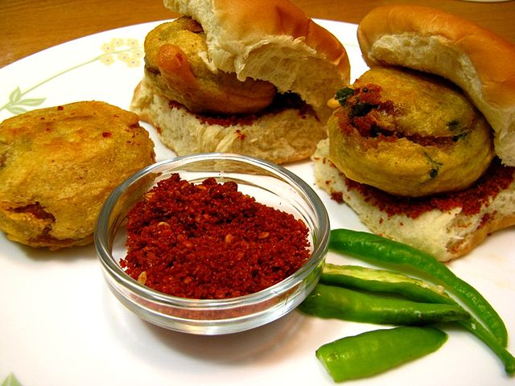

Vada Pav

INGREDIENTS
- Mashed potatoes
- Gram Flour Batter
- Oil
- Spices
- Bread Bun
STEPS TO MAKE IT !
- Boil 2 large potatoes that weigh about 350 grams. Peel and then mash them with a fork in a bowl.
- Heat 2 to 3 teaspoons of oil in a small pan. Add ½ a teaspoon of mustard seeds and crackle them.
- Add the crushed garlic cloves and green chilies mixture to the pan. Add ⅛ teaspoon of turmeric powder (about 2 to 3 pinches).
- Stir on a low heat for some seconds or until the raw aroma of garlic goes away.
- Pour this tempering mixture together with the oil to the mashed potatoes.
- Add 1 to 2 tablespoons of chopped coriander leaves (cilantro) and salt as required.
- Mix everything well with a spoon. Do a taste test and if needed, add more salt.
- In another bowl, make a smooth batter from 1 to 1.25 cups besan (gram flour), ⅛ teaspoon turmeric powder (about 2 to 3 pinches), a pinch of asafoetida (hing), a pinch of baking soda (optional), salt and ½ cup water or as needed.
- Dip the slightly flattened potato balls in the batter and coat it evenly with the batter.
- Before you dip the batata vada in the batter, heat oil in a pan or wok (kadai). When the oil becomes hot then dip the batata vada in the batter to coat as shown in the above steps.
- Depending on the size of the kadai or pan, you can add more or less of the vada while frying. But don’t overcrowd the pan
- Place them on kitchen paper towels to absorb extra oil. Make all batata vada this way in batches and set aside.
- Serve them when they are still hot or warm. Put all the chutneys and pav on your work surface. Slice the pav without breaking it into two parts and set aside.
- Place the hot batata vada in the bread slices.
- Serve vada pav immediately or else the pav becomes soggy. You can also serve some salted fried green chilies and both of the chutneys with it.
HOME